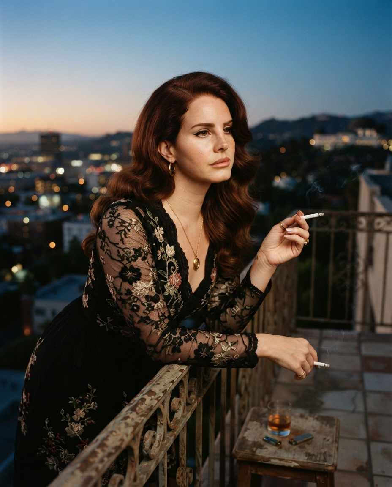
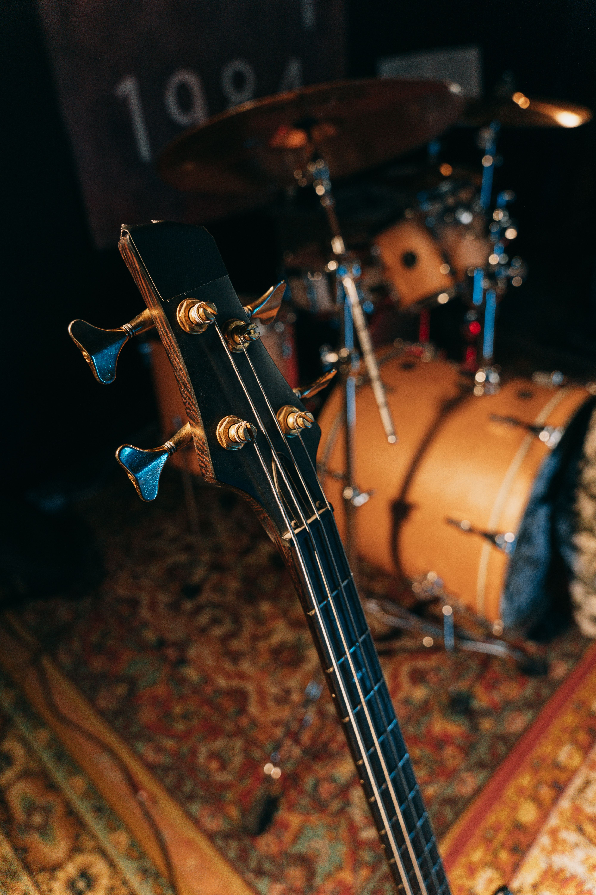

Welcome
The music artist this page will reference is Lana Del Rey, an indie, orchestral baroque singer and songwriter. Lana has been a staple artist in my life since middle school, and I enjoy all of her Americana and melancholic repertoire she has created.

Why I Love Their Music
Born in Manhattan, New York, NY, Lana's peculiar yet captivating style of songwritting and singing is a spectacle of unheard proportions. The methods in her lyricism are picturesque and embody the structure and sound production in all of her 9 albums so well.